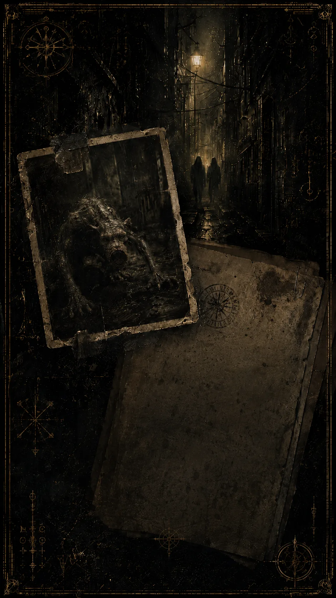

SECCIÓN // ARCHIVO
EL ARCHIVO
No deberías saber todo esto todavía.
ENTIDADES

ENTIDAD // 001
ŚUKRAHĀRĪ
- Estado
- Documentado
- Procedencia
- [OTRO PLANO]
- Tamaño
- Comparable al de un chimpancé
- Patrón
- ████████████████
Ser de apariencia híbrida entre rata y primate. La información disponible procede de testimonios incompletos y de individuos vinculados a LA PLAGA.
Información adicional bloqueada hasta que el archivo narrativo la revele.
CONEXIONES

Las coincidencias empiezan a acumularse.
Fechas, lugares, nombres, símbolos y testimonios contradictorios. Esta sección crecerá a medida que nuevos relatos abran partes del universo.
- 001 La carne ofrecida DISPONIBLE
- 002 La Plaga RESTRINGIDO
- 003 Torre del reloj RESTRINGIDO
- 004 █████████████ CORRUPTO
ADVERTENCIA
> NO CONFÍES EN TODO LO QUE LEAS AQUÍ.
> ALGUNOS TESTIMONIOS MIENTEN.
> OTROS NO SABEN QUE ESTÁN MINTIENDO.
> _